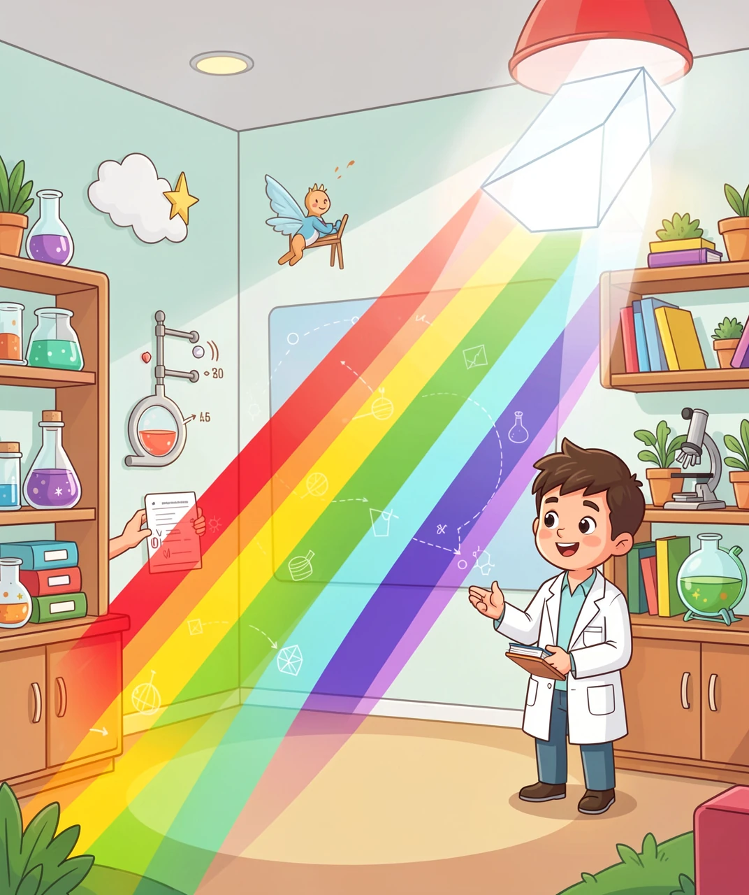
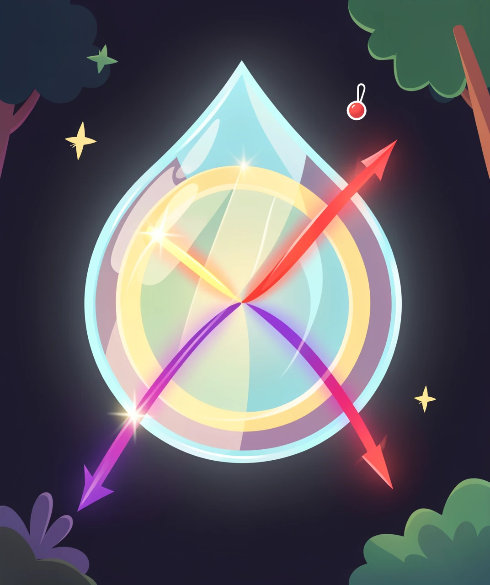
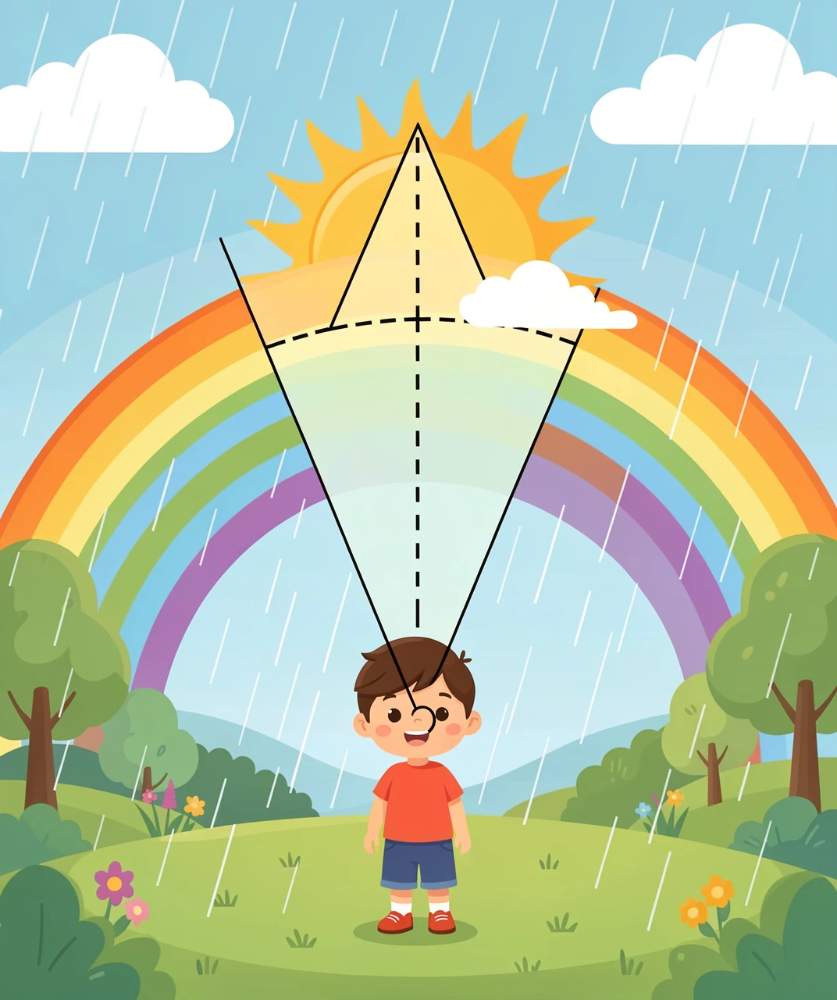
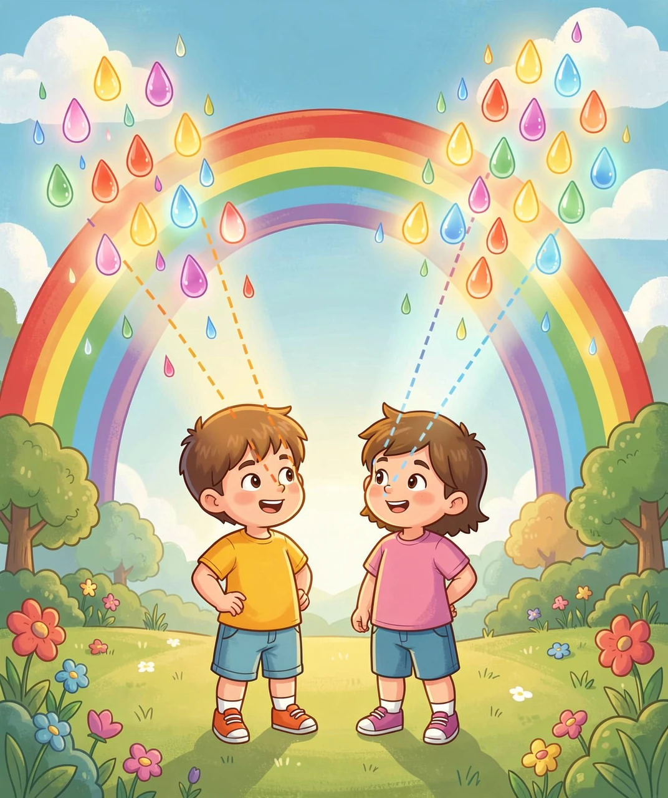

一场光在雨滴里的三次折返，以及一个你永远追不到的终点
雨刚停，太阳钻出来，对面天空挂着一道七色的弧。全世界的小孩大概都问过：彩虹到底是怎么来的？
答案里有个反直觉的地方——彩虹不是"天上的东西"，它更像一场只属于你一个人的表演。往下看你就明白了。

第一件事要打破一个直觉：白色的阳光不是"纯白"的，它是所有颜色混在一起的。
1666 年，牛顿在暗室里做了个著名的实验。他在窗户上开个小洞，让一束阳光射进来，穿过一块三棱镜，结果对面的墙上出现了一条彩带——红、橙、黄、绿、蓝、靛、紫。
但真正精彩的是第二步。牛顿在这个彩色光带的后面再放一块棱镜，把它倒过来放——七色光穿过第二块棱镜之后，又合成了白光。
这一步才是关键。它证明了：颜色不是棱镜"造"出来的，而是阳光里本来就有，棱镜只是把它们分开了。
天上没有棱镜。但有水滴。
光穿过水滴的时候，会走三步——记住这三步，整道彩虹就全说通了：
① 从空气钻进水滴 → 拐弯（折射）
② 撞到水滴背面 → 弹回来（反射）
③ 从水滴钻回空气 → 再拐一次弯（折射）
关键在于第 ① 步和第 ③ 步：不同颜色的光，拐弯的幅度不一样。
紫光拐得最厉害，红光拐得最少。所以它们虽然同时钻进同一颗水滴，出来的时候却朝不同的方向飞了——紫光偏得厉害，红光偏得少。混在一起的白光，就这样被"摊"成了扇形。
这就是色散。雨滴干的事，和牛顿的棱镜是同一件事。

现在拼上最后一块拼图。
水滴有无数颗，阳光从各个角度射进去。但只有特定角度的水滴，才能把光正好送进你的眼睛。算出来的结果是：
红光：偏离太阳方向约 42°
紫光：偏离太阳方向约 40°
也就是说，如果你背对着太阳，沿着"太阳—你的眼睛"这条线往前看，那么偏 42° 的方向上，你会看到红光；偏 40° 的方向上，你会看到紫光。
把"偏离 42°"这根线转一整圈，就画出一个圆。所以天上的彩虹是一段圆弧——红光在外侧（42°），紫光在内侧（40°）。

顺带解决一个日常疑问：为什么中午很少见到彩虹？
因为彩虹总是出现在太阳对面、偏离 42° 的方向。太阳升得太高（超过 42°），那 42° 的圆弧就整个落到地平线下面去了，你在地面上根本看不到。
所以：太阳要低，对面要有雨，你站在中间。这就是为什么彩虹总出现在清晨或傍晚的雨后。
这是我最喜欢的一层。
彩虹看起来挂在天上，但它不是一件东西。它不是一个物体、不是一层雾、更不是一座桥。
它是一组角度关系：以你的眼睛为顶点，朝太阳的反方向偏 42°，那一圈上的水滴，此刻正好把红光送进你的眼睛。
这意味着一件很奇妙的事：
你走一步，那批水滴就换了一批。你看到的彩虹，是"此刻、此地、你的眼睛"专属的。
站在你旁边的人，看到的是另一个彩虹——由另一批水滴组成，虽然看起来一模一样。严格说，两个人永远看不到同一个彩虹。
所以"彩虹的尽头"根本不存在。你朝它走，它就往后退；你走到哪里，它就在哪里重新"生成"一次。你追的不是一个地点，而是一个角度。

运气好的时候，主彩虹的外面还会挂着一道更淡的第二道，叫霓（也叫副虹）。
把两道放在一起看，你会发现一件怪事：颜色顺序是反的。
主虹（里面那道）：外红 → 内紫
霓（外面那道）：外紫 → 内红
角度：主虹约 42°，霓约 51°
为什么会反过来？答案还是第二层那三步——只不过第 ② 步多弹了一次。
光在霓里走的是：折射进去 → 反射 → 再反射一次 → 折射出来。多一次反射，等于多一次"翻转"，出来的顺序就颠倒了。
那为什么霓更暗？还记得上面说的吗——水滴背面的反射是部分反射，每弹一次都有光漏出去。弹两次，漏掉的光就多得多，所以霓总是淡淡的，有时候要仔细看才找得到。
还有一个细节值得找一找：两道彩虹中间那片天空特别暗。那片区域有个名字，叫亚历山大暗带——因为主虹和霓都没有把光送到这个角度区间，所以它比周围都暗。下次看到双彩虹，记得找一下这条暗带。
1. 白光是所有颜色的混合。棱镜、雨滴、光盘背面，做的事情都一样：把混在一起的东西按角度摊开。看到颜色被分开，先想"是不是不同颜色拐弯的幅度不同"。
2. 有些东西是"关系"，不是"物体"。彩虹不是挂在天上的物件，是一组角度关系。影子、倒影、地平线也都是这一类。遇到追不到的东西，先问它到底是不是一件"东西"。
3. 多一步，结果就翻转。主虹一次反射、霓两次反射，颜色顺序整个反过来。很多时候，差别不在零件，而在零件走了几步。
（答案：1-B 2-B 3-B 4-C 5-B）